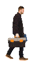

Field Service · 2026
Run service from first call to final invoice
How AI is taking the busywork out of dispatch, quoting, and getting paid.

Q3 Business Review
Agenda
What we'll cover
01
The state of dispatch
Where time and margin leak today
02
Quoting on-site
Win the job before you leave
03
Job costing
See margin on every job
04
Zuper Sense
AI that runs in the background

The impact
What crews see in the first 90 days
28%
less drive time per crew, per week
1 in 3
quotes won on-site, before leaving
2 days
faster from job done to invoice sent
“
We stopped losing jobs in the gap between the estimate and the invoice. Zuper closed it.
DR
Dana Russell
Owner, Summit Roofing
Scheduling & Dispatch
One board for every crew, every job
Drag a job, reassign a tech, and the customer gets an updated ETA — automatically.
✓ Smart routing by location & skill
✓ Live status from the field
✓ Automatic customer notifications
New Zuper Sense
The AI that runs in the background
Sense reads every job, routes the nearest qualified tech, and flags the work that's quietly losing you money.
Auto-dispatch
Matches the right crew to the right job by skill, location and load.
Job summaries
Turns field notes and photos into a clean record in one tap.
Margin alerts
Catches overruns mid-job, before the week is lost.